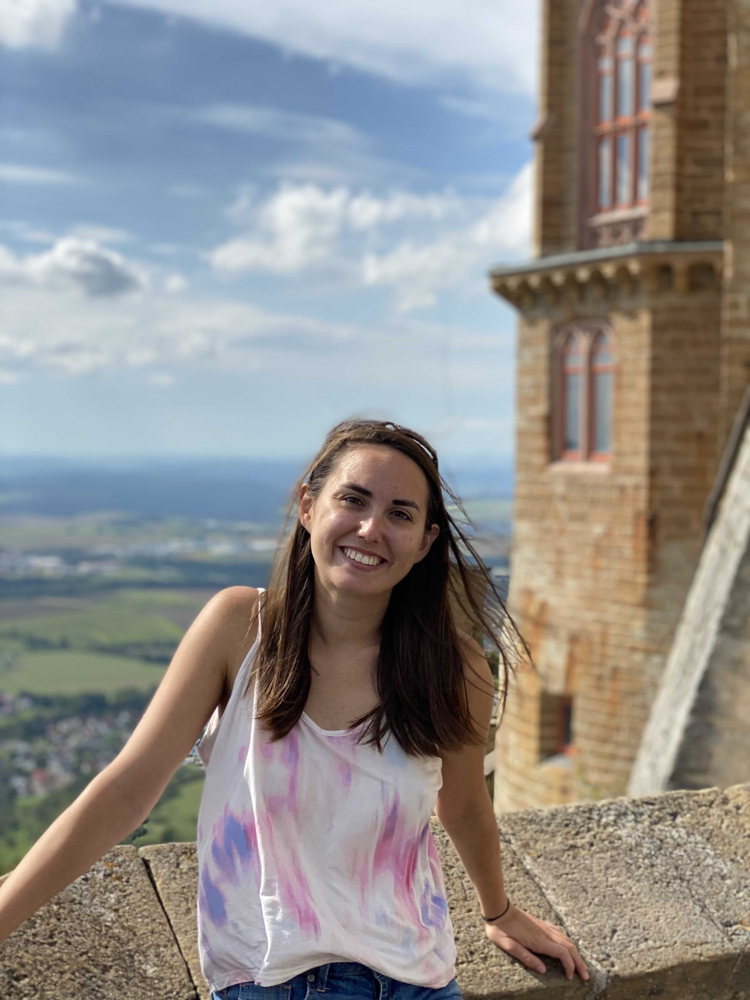
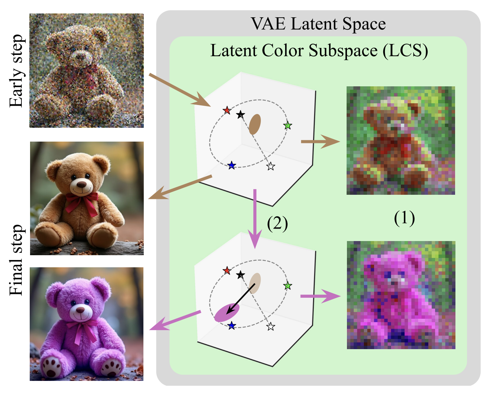
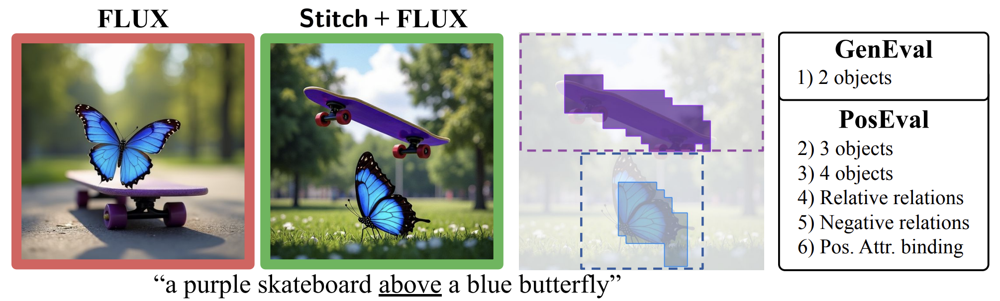
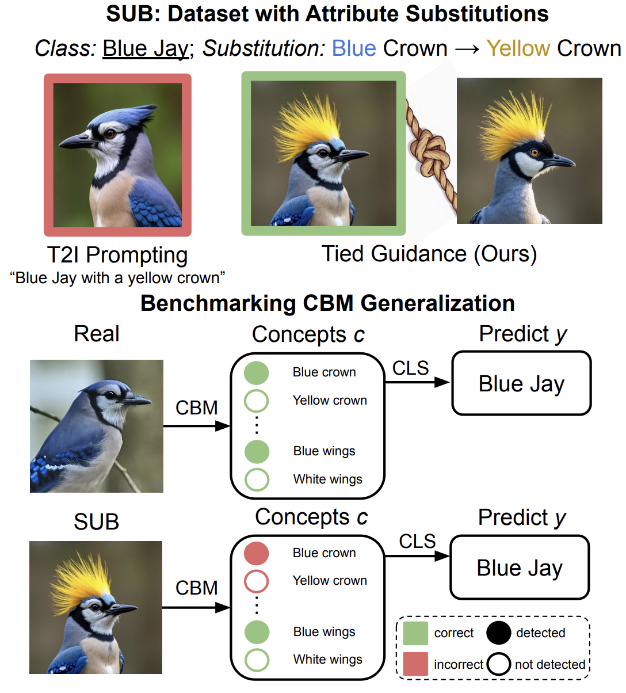
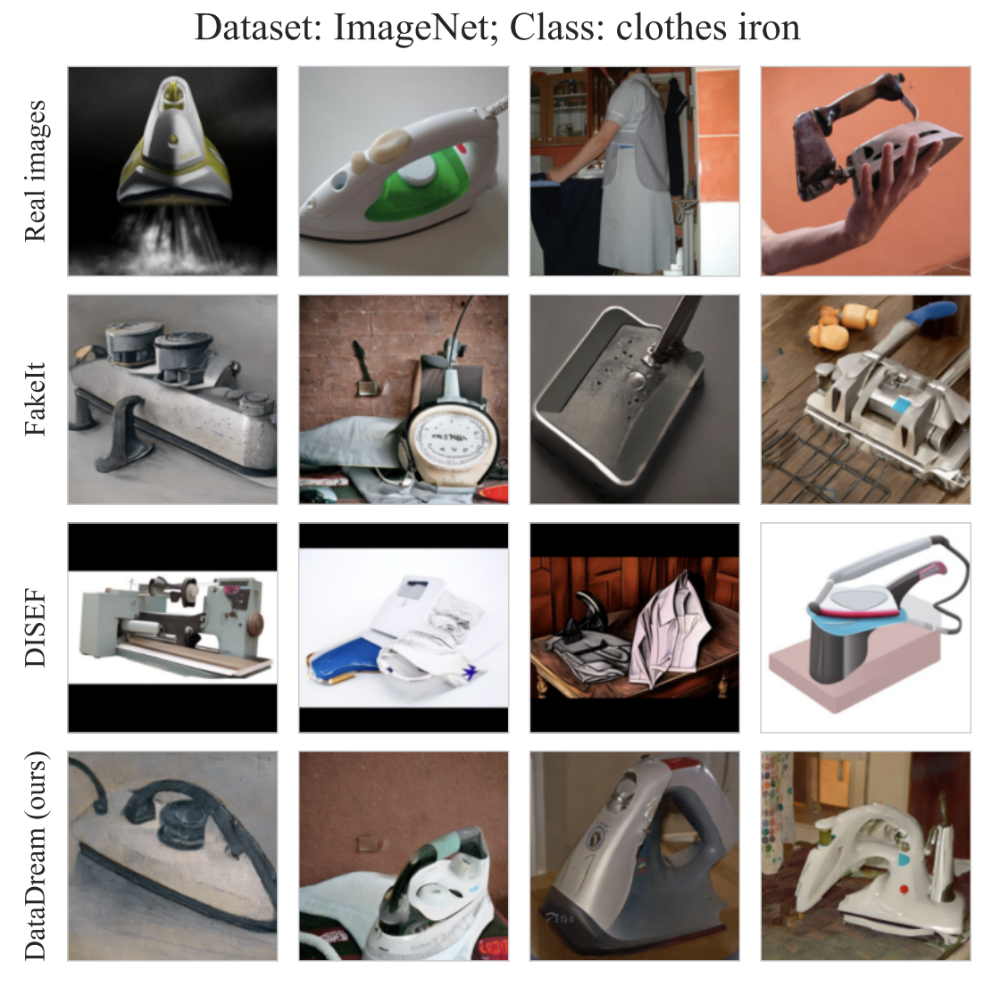

I am a Machine Learning researcher focused on controlling text-to-image models. My work has included controlling color and spatial composition, as well as generating out-of-distribution images in flow-matching models. Over the past few years, I’ve worked at TUM and Helmholtz Munich, and I’m also a Junior Member of the Munich Center for Machine Learning.
I previously earned a Master’s degree in Machine Learning from the University of Tübingen and a Bachelor’s degree in Computer Engineering from Iowa State University.


We investigate how color is represented in the latent space of diffusion models such as FLUX. Surprisingly, we find that color is encoded in a highly interpretable subspace that closely resembles the HSL color model. We further verify that this structure is not merely correlational but causal: manipulating this subspace enables precise, targeted control over the color of objects in the generated images.

Spatial positioning has long been a challenging aspect for text-to-image models, though recent improvements on benchmarks such as GenEval’s positioning task suggest that this problem may be nearing resolution. We find that this is not the case. When evaluated on more challenging positional prompts involving multiple objects or more complex relationships, even state-of-the-art models fail to generalize reliably. To support the next generation of text-to-image models, we introduce a new benchmark—PosEval—comprising five positional tasks designed to extend and better evaluate spatial understanding capabilities. Building on this, we also propose Stitch, a layout control method designed to reduce artifacts in transformer-based models.

In concept-based explainability methods such as Concept Bottleneck Models, the reliability of the explanations depends critically on the assumption that the model accurately detects the intended concepts. However, this can be fundamentally difficult to test: how can we tell whether the model is truly detecting the blue crown on the blue jay, rather than relying on some other spurious cue, if no such bird exists—a blue jay with a differently colored crown—to serve as a comparison? We address this by generating synthetic images of existing classes in which a single concept is selectively modified, allowing us to evaluate concept-based models under controlled conditions. We find that these models do not behave as intended: they often hallucinate the original attribute, suggesting reliance on spurious features rather than genuinely interpretable representations.

As image generation models continue to improve in quality, it becomes increasingly feasible to reduce data curation costs by using them to generate synthetic training data for classifiers. However, this approach can be ineffective when the generation model lacks a sufficient understanding of the target classes. We find that when few-shot samples are available, using them to fine-tune the generative model before generating training images is highly effective for improving its understanding of the base classes, significantly boosting the accuracy of the final trained classifier.